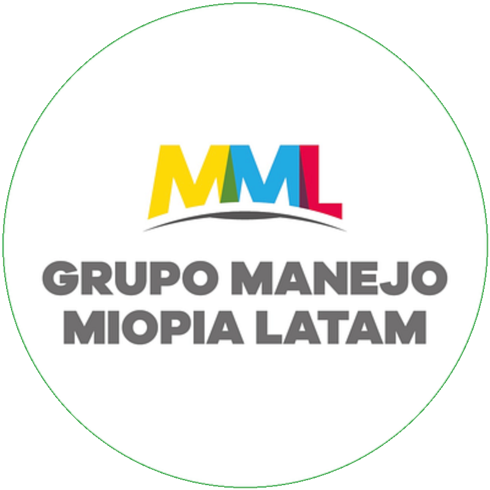

Carnet de seguimiento del control de miopía
Grupo Manejo Miopía Latam · Llévelo a todos los controles, con el optómetra y con el oftalmólogo
Datos de base
Nombre
Fecha de nacimiento
Edad al inicio de la miopía
Padres miopesNinguno · Uno · Dos
TratamientoGafas · Blandos · Orto-k · Atropina · Combinado
Fecha de inicio
Profesional / consultorio
Oftalmología pediátrica
Controles
| Fecha | Edad | AV OD / OI | Refracción ciclopléjica OD | Refracción ciclopléjica OI | Longitud axial OD (mm) | Longitud axial OI (mm) | Crecimiento en 12 meses OD / OI | Equipo de medición | Horas de uso / aire libre | Próximo control |
|---|
| | | | | | | | | | |
| | | | | | | | | | |
| | | | | | | | | | |
| | | | | | | | | | |
| | | | | | | | | | |
| | | | | | | | | | |
| | | | | | | | | | |
| | | | | | | | | | |
| | | | | | | | | | |
| | | | | | | | | | |
| | | | | | | | | | |
| | | | | | | | | | |
| | | | | | | | | | |
Educativo. No reemplaza la valoración visual individual.grupomiopialatam.substack.com
Qué revisar según el tratamiento
Calendario del primer año. Luego, control cada 6 meses. Refracción ciclopléjica y longitud axial cada 6 meses; examen completo con fondo de ojo cada año.
Gafas para control de miopía
1 mes · 6 meses · 1 año
Montura bien ajustada que no se baje · lentes centradas · uso todo el día (12 horas o más) · estado de las lentes.
Lentes de contacto blandos
1 semana · 1 mes · 6 meses · 1 año
Córnea en lámpara de hendidura · horas y días de uso · cómo se pone, se quita y cuida los lentes · ojo rojo o molestias.
Ortoqueratología
1 día · 1 semana · 1 mes · 3 meses · 6 meses · 1 año
Topografía corneal · visión al levantarse · córnea en lámpara de hendidura · limpieza de los lentes · reemplazo del lente cada año · biometría y topografía cada 6 meses.
Atropina en baja dosis
1 día · 1 semana · 1 mes · 3 meses · 6 meses · 1 año
Tamaño de la pupila · sensibilidad a la luz · visión de cerca y acomodación · presión del ojo · uso todas las noches.
Cómo leer el crecimiento del ojo en 12 meses
Verde: como un ojo sin miopía0,1 a 0,2 mm/año entre 7 y 10 años · cerca de 0,1 mm/año entre 11 y 16 años.
Amarillo: más de lo idealSe acerca a lo de un miope sin tratamiento: 0,3 mm/año a los 7-10 años · 0,2 mm/año a los 11-16. Revisar adherencia y hábitos.
Meta de largo plazoMantener el ojo por debajo de 26 mm. Que el percentil de longitud axial no siga subiendo.
Registro específico del tratamiento
| Fecha | Hallazgos del tratamiento (ajuste, córnea, topografía, pupila, presión) | Molestias o eventos | Decisión |
|---|
| | | |
| | | |
| | | |
| | | |
| | | |
| | | |
| | | |
Fuentes: IMI Clinical Management Guidelines 2019 · Consejo Mundial de Optometría · Tideman 2016 y 2018 · Myopia Profile.Grupo Manejo Miopía Latam · grupomiopialatam.substack.com